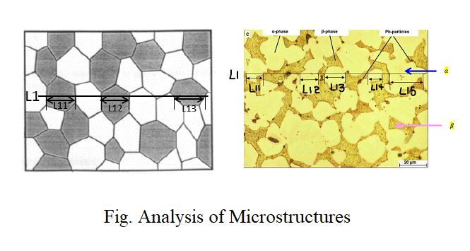
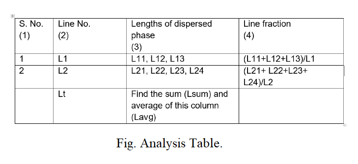
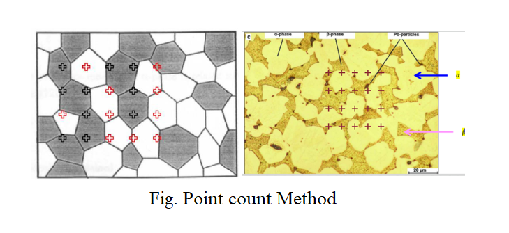
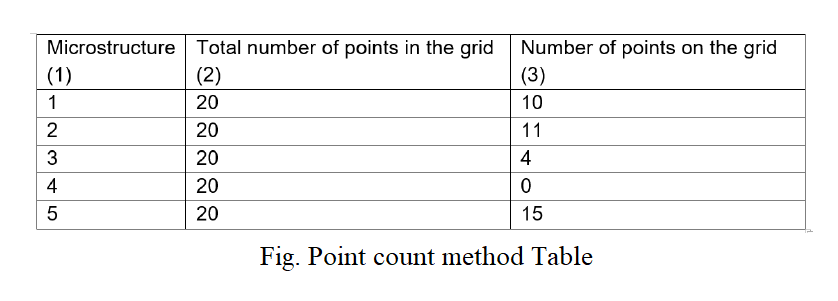
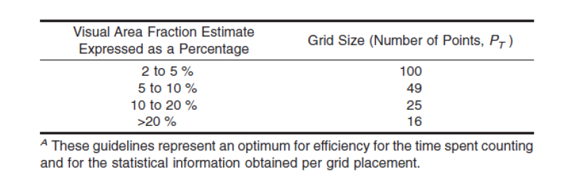

Analysis of Microstructure :
To find the Average size of dispersed phase in a given Microstructure, the below steps are to be followed :
- Draw a line of known length (L1) on the given microstructure. For example in following figure, assume that we are interested in finding the average size of the dispersed phase i.e. grey color phase.

- Measure length of the line passes through the desired phase i.e. L11, L12, L13 and L14....
- Draw as many as possible lines and measures the length of at least 100 grains of desired phase.
- Tabulate the results as follows.

- Average size of the dispersed phase = Lavg,
Lavg = (L11+L12+L13+L21+L22+L23+L24)/7
- Fraction of the dispersed phase = Lsum/Lt,
Lsum = (L11+L12+L13+L21+L22+L23+L24)
Lt = L1+L2
- To find Error = Find the standard deviation of data in column(3) of the above table.
Point count Method :
To decide whether the distribution of second phase is uniform or not.

- Form a grid containing 20 points and overlap the grid on the microstructure as shown above.
- Indeed the points falling on the dispersed phase is drawn with yellow color.
- Count the number of points that appear on the dispersed phase.
- Total number of points= 20.
- Number of points that appear on the dispersed phase=10.
- Fraction of the dispersed phase can be calculated as,
{[(Number of points that appear on the dispersed phase)/(Total number of points)]*100} = = (10/20)*100= 50%
- In this way collect 5 to 10 microstructures and find the number of points in the dispersed phase with the same grid
- Tabulate the results as follows

- Find the standard deviation of the data from which it can be concluded that the phase is uniform or not uniform
How to choose number of points on Grid :
